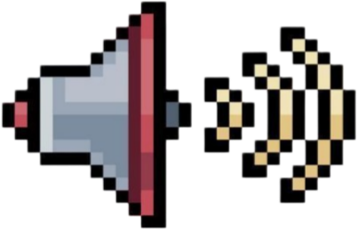
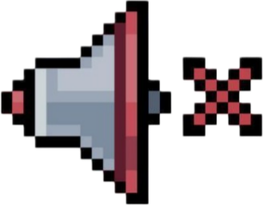
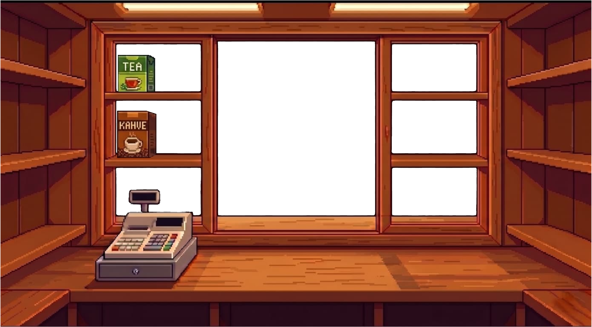
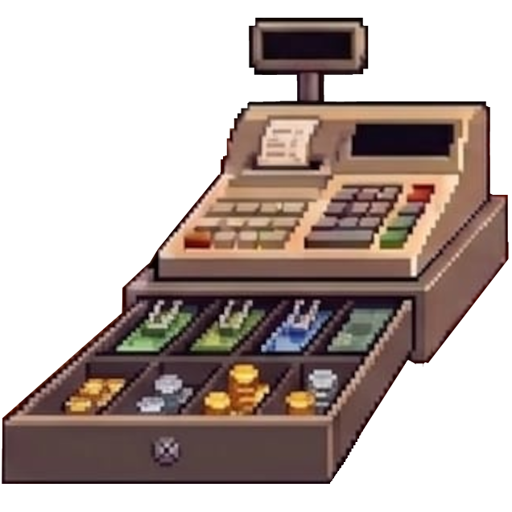
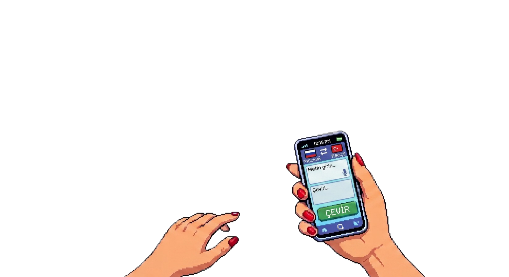
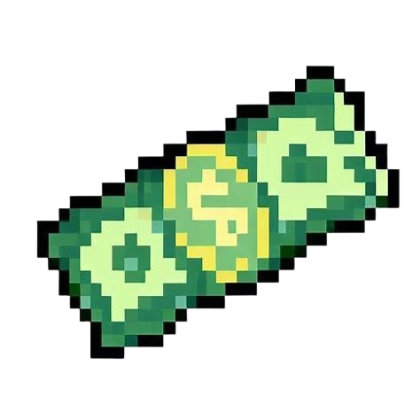

MOD: -
XP: 0
Padej Avı: -
❤️❤️❤️




FİLOLOJİ TERMİNALİ
Duyduğunu Kiril ile değil, kulağına geldiği gibi yaz:
mojno mne odin çay, ya hoçu vodu, dayte kofe gibi.
Terminal dinlemede...
🎯 Padej Avı
🌍 Kültür Notu
🏆
BAŞARIM KİLİDİ AÇILDI
Başarım Adı
🎯
PADEJ KEŞFEDİLDİ
Padej Adı